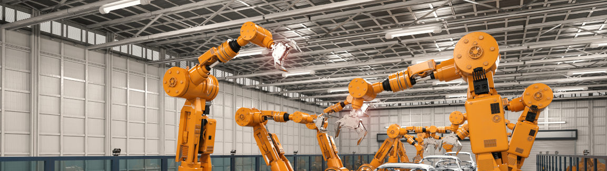

Ritual y rutina
Vivimos en una epoca del tiempo muy rapida, los avances tecnologicos agilizan el paso de muchos procesos y hemos utilizado las rutinas y los rituales para cuantizar el tiempo que se nos encuentra disponible. Veamos como transcursa el tiempo y los rituales de nuestros ancestros los recreamos sin pensarlo dos veces. Las rutinas son especialmente importantes para asumir nuestras tareas diarias. Esto es una demostracion no de nuestro desprecio del tiempo si no del avance en las tecnologias sociales que nos permiten hacer mas con menos.
Nos parece muy extranno hablar de los rituales hoy dia ya que en el contexto cotidiano llevan una connotacion espiritual o religiosa. Sin embargo, tras lo mostrado en el documental de Baraka podemos ver que esta definicion esta anticuada. Vemos en las tribus como se agrupan a cantar y las etapas de la ceremonia, el canto, las movidas. Todo tiene un orden y un significado por el cual se hace y se reconoce. Cuando nos levantamos hoy dia cada mannana, agarramos nuestro dispositivo electronico y vemos las noticias o nos contactamos con familiares. Salimos de nuestras habitaciones y viajamos en un cubo de acero con ruedas. En lo que transcursamos el suelo tecnico comprimido tomamos fila cuando cruzamos dos vias publicas. El tercer punto de vista nunca sabria el porque de nuestras acciones. No sabrian porque decidimos caminar por encima del piso blanco y no el negro. No sabrian porque todos usamos el mismo estilo de pantalones de tela azul. Todos estos ejemplos son ceremonias predeterminadas que la sociedad moderna experimenta y no lo pensamos.
Tras los avances tecnologicos, hemos experimentado un crecimiento absurdo en nuestra habilidad de comunicarnos y la transmision de informacion. Con esto, se hace mas eficiente agilizado el trabajo del sector obrero pero no todos pueden con la carga. Lo que antes se hacia en varios dias de trabajo, se hace hoy dia en varias horas. Para poder absorber esta cantidad absurda de informacion tenemos que encarrilarnos en una rutina. Vemos las noticias por la mannana, ponemos la radio en nuestros vehiculos, vemos el periodico, vemos los "billboards", experimentamos con nuestros alrededores de forma ciclica digiriendo la informacion cuantizada.
El ritual y la rutina controlan y definen nuestras vidas, son parte integras de nuestra sociedad y sin ellas no pudiesemos aprovechar al maximo de nuestros avances. El tiempo ya no se define en horas minutos y segundos, se define en que salimos al mundo a hacer ahora y como lo vamos a hacer. No tomamos dias para viajar en camioneta de un lado del pais al otro, hacemos una llamada telefonica. Es inaceptable el malgasto del tiempo.